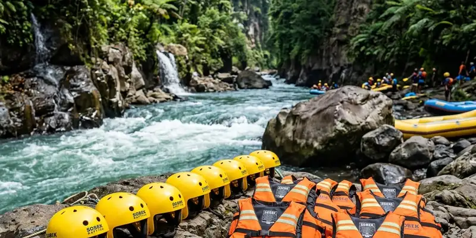

Biaya river rafting di Malang umumnya mencakup sewa perahu, perlengkapan keselamatan, dan jasa pemandu dalam satu paket, sehingga peserta tidak perlu menyiapkan peralatan sendiri selain pakaian ganti dan alas kaki khusus air.
Ringkasan Inti
- Biaya paket rafting biasanya sudah mencakup perahu, dayung, helm, dan rompi pelampung.
- Harga dapat bervariasi tergantung jalur, durasi, dan jumlah peserta dalam rombongan.
- Persiapan utama meliputi pakaian ganti, alas kaki air, dan kondisi fisik yang sehat.
- Memilih operator berizin resmi lebih penting dibanding sekadar mencari harga termurah.
Apa Saja Komponen Biaya River Rafting di Malang?
Komponen biaya river rafting di Malang umumnya mencakup sewa perahu karet, perlengkapan keselamatan standar, jasa pemandu, dan terkadang sudah termasuk transportasi penjemputan serta dokumentasi foto kegiatan.
Beberapa komponen yang biasa termasuk dalam paket:
- Sewa perahu karet dan dayung.
- Helm pelindung kepala dan rompi pelampung.
- Jasa pemandu bersertifikat yang mendampingi selama pengarungan.
- Asuransi kecelakaan dasar dari sebagian operator.
- Fasilitas tambahan seperti tempat bilas, loker, atau makan siang, tergantung paket yang dipilih.
Harga dapat bervariasi tergantung panjang jalur sungai, tingkat kesulitan jeram, dan jumlah peserta dalam satu rombongan, sehingga sebaiknya wisatawan menanyakan rincian paket secara langsung kepada operator sebelum memesan.

Persiapan yang matang dan penggunaan perlengkapan keselamatan standar adalah kunci petualangan arung jeram yang aman dan menyenangkan.
Apa Saja yang Perlu Dipersiapkan Sebelum Rafting?
Persiapan utama sebelum river rafting meliputi pakaian yang cepat kering, alas kaki khusus air, serta memastikan kondisi fisik dalam keadaan sehat sebelum mengikuti kegiatan.
Daftar persiapan yang disarankan:
- Kenakan pakaian olahraga yang cepat kering, hindari bahan jeans atau katun tebal.
- Gunakan sandal gunung atau sepatu khusus air agar tidak licin saat berjalan di bebatuan sungai.
- Bawa pakaian ganti dan handuk kecil untuk setelah kegiatan selesai.
- Simpan barang berharga dalam tas kedap air atau titipkan di loker yang disediakan operator.
- Sarapan atau makan secukupnya sebelum berangkat agar stamina terjaga selama kegiatan.
Wisatawan dengan kondisi kesehatan tertentu, seperti gangguan jantung, tekanan darah tidak stabil, atau sedang hamil, sebaiknya berkonsultasi dengan tenaga medis sebelum mengikuti kegiatan ini.
Bagaimana Cara Memilih Operator River Rafting yang Tepat?
Cara memilih operator river rafting yang tepat adalah dengan memeriksa izin resmi, kualifikasi pemandu, kondisi perlengkapan keselamatan, dan ulasan dari peserta sebelumnya.
Kriteria yang perlu diperhatikan:
- Operator memiliki izin usaha pariwisata resmi dari instansi terkait.
- Pemandu memiliki sertifikasi keselamatan air atau pelatihan penyelamatan dasar.
- Perlengkapan seperti helm dan rompi pelampung dalam kondisi layak pakai, bukan rusak atau usang.
- Terdapat prosedur briefing keselamatan yang jelas sebelum kegiatan dimulai.
- Ulasan dari wisatawan sebelumnya menunjukkan pengalaman yang konsisten dan positif.
Memilih operator hanya berdasarkan harga termurah tanpa mempertimbangkan standar keselamatan dapat meningkatkan risiko selama kegiatan berlangsung.
Kesimpulan
Biaya river rafting di Malang umumnya sudah mencakup kebutuhan dasar seperti perahu, perlengkapan keselamatan, dan jasa pemandu, sehingga peserta hanya perlu menyiapkan pakaian ganti, alas kaki khusus air, dan kondisi fisik yang prima. Memilih operator dengan izin resmi dan standar keselamatan yang jelas jauh lebih penting dibanding sekadar mengejar harga termurah.
FAQ
Sebagian besar paket rafting di Malang sudah mencakup helm dan rompi pelampung sebagai bagian dari biaya yang dibayarkan.
Sebaiknya kenakan pakaian olahraga yang cepat kering serta alas kaki khusus air agar tidak licin di bebatuan sungai.
Pastikan operator memiliki izin resmi, pemandu bersertifikat, dan perlengkapan keselamatan dalam kondisi layak pakai sebelum memesan paket.